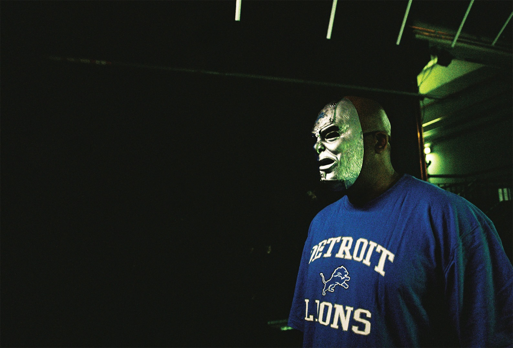
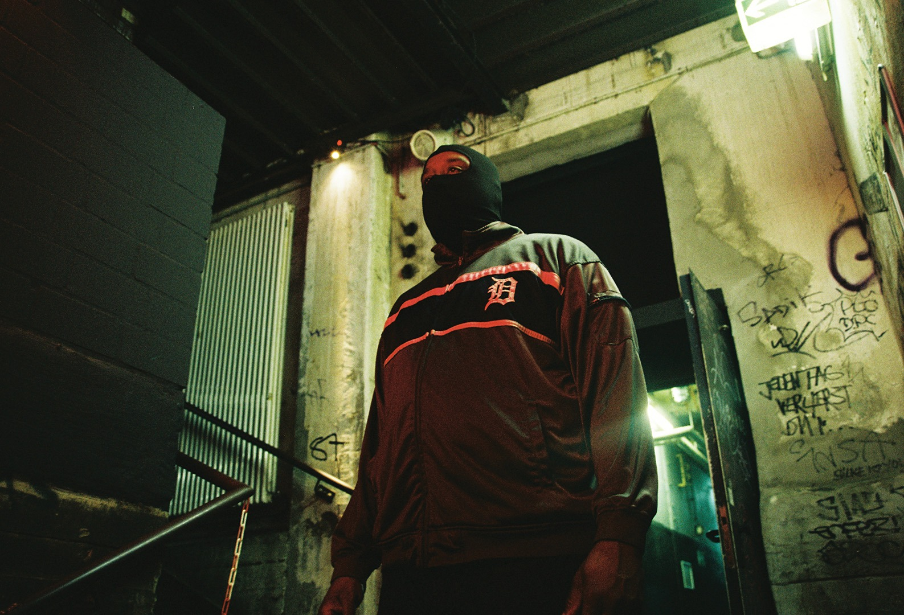
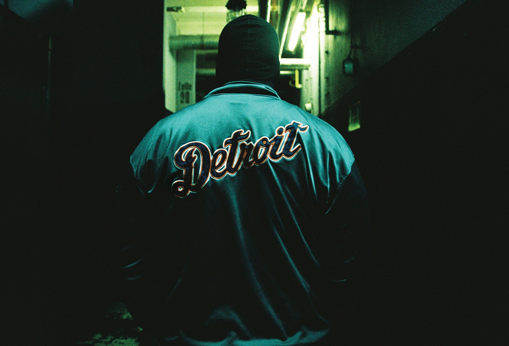

The Unrelenting Energy of DJ Stingray
{kind=link}
When I meet Sherard Ingram, it’s appropriately within the walls of Berlin’s iconic Tresor venue. The basement club is situated in the corner of the much larger building known as Kraftwerk, a converted multi-level powerplant that once provided electricity to the whole of East Berlin during the GDR era.
Famously, it was clubs like Tresor that forged Berlin’s early connection with Detroit during the 90s. Ingram’s involvement in the Detroit music scene stretches back to when Moodymann taught him how to DJ after school in the early 80s. Last year, he consolidated this connection when he relocated to the German capital, and now he’s partnered with Tresor to oversee the fourth mix in the club’s new Kern series.
“The plan was just to be near where the love was,” Ingram says of his move to Berlin. “I took a gamble. I said, you know what, every time I come over here there’s loads of people who I meet and they say, ‘next time you’re in Europe call me, we’ll have you play.’ I started analysing the types of clubs and crowds that I play for, for want of a better word my ‘market’, and they’re small to medium clubs that don’t have too much of a budget. They can’t fly me transatlantic, but it’s easier to fly me from Berlin than it is Detroit.”
{kind=link}

{kind=link}

{kind=link}

-
© George Nebieridze
-
© George Nebieridze
-
© George Nebieridze
For his high-intensity Kern mix, selections which stretch back to the early 90s are woven with more contemporary tracks. There are a handful of classic selections from Drexciya, the seminal Detroit duo who were as famous for shrouding their music in intricate mythology as they were for testing the boundaries of early techno and electro. Ingram was drafted as Drexciya’s tour DJ in the late 90s (and encouraged by the duo to don his trademark ski mask), a few short years before the tragic death of member James Stinson in 2002. Drawing a thread between past and present, Ingram’s Kern mix also features a new record from NRSB-11, the project he later formed with remaining member Gerald Donald.
“I have to say, I have spent many hours listening to that man’s work and conversing with him,” Ingram says of working again with Donald, who’s been making experimental music with his Dopplereffekt project since the mid 90s. “We share so many of the same viewpoints regarding the field of electronic music. He helps to sharpen my focus and conceptual base.”
When Ingram removes his ski mask, he’s as unassuming as you could possibly imagine. He’s middle-aged and dressed casually in jeans and a t-shirt, quick to launch into warm conversation. But he’s also looking pretty exhausted. After all, he’s just survived a hectic weekend of gigging that took him across Italy, the UK and Germany, indicating that his relocation gamble paid off.
{kind=link}
But strangely enough, his move to Europe comes at a time when his home country is finally starting to tweak to the dancefloor legacy of his hometown. He was recently back in Detroit for the Movement Festival, which is drawing larger crowds every year. Ingram speaks of turning up to an afterparty that weekend at 7am with very low expectations. “Here’s a city that’s been indoctrinated in the mentality of the bar closing at 2am,” he says. “You don’t throw parties at 10 in the morning. But the whole dancefloor was full. I thought, ‘Detroit has come a long way.’”
Although Ingram’s history with club culture goes way back, he’s only performed in LA and New York for the very first time the past few years. This is the same guy who partnered with Carl Craig, Moodymann and Shake as Urban Tribe to record The Collapse of Modern Culture for Mo’ Wax way back in 1998, before working with Drexciya not long after. It’s incomprehensible to me that he’s not more recognised in his home country, let alone that techno is still considered an outsider culture in Detroit.
“Black people don’t listen to techno. America doesn’t listen to techno,” he argues, but then adds in the same breath that African-American soul food restaurants are now sponsoring underground techno parties, while veteran Michigan company Kowalski Sausages has done the same for a local techno radio show. These are grassroots community businesses you’d hardly associate with techno, though Ingram points to their involvement as proof that a cultural shift is happening. For the moment though, techno remains largely an underground affair in Detroit.
"We should be pushing for new sounds. Let's push it to the limit"
“The strength of Detroit lies in its artistic community,” Ingram explains. “We have so many artists concentrated in the urban centre of the city. You’ve got hip-hop, gospel, RnB, jazz, pop music, rock ‘n’ roll… These are monolithic structures that have pervaded American culture, they’ve been our soundtrack. But this also means there is no way techno could become a culture like it is in Berlin and Amsterdam.”
The genesis of Detroit techno in the late 80s offered futuristic optimism in the face of the shadow cast by the city’s collapsing car industry. However, these ideals also pegged the early pioneers – Jeff Mills, the “Belleville Three” trio of Juan Atkins, Kevin Saunderson and Derrick May, and beyond – as outcasts in a community that Ingram says was more rooted in immediate reality. Ingram seems to feel more committed to ideals of futurism more many of his Detroit contemporaries, eschewing militant adherence to 4/4 rhythms that has come to characterise so much modern techno, exchanging it for an eclectic approach that often favours broken beats. His lightning fast mixing tears swiftly and seamlessly through the tempos, and with the constant shifts in tone, a DJ Stingray set is more of a seething mass of sound, as opposed to a typical club groove that keeps rolling all night long.
While his leaning towards synthetic sounds often sees him labelled ‘electro’, it’s a tag that he rejects for its retro connotations. He’s not producing the kind of throwback music we might associate with stereotypical electro, full of “80s analogue keyboards and 808s,” as he puts it.
{kind=link}
-
© George Nebieridze
He’s remained steady with releases on a variety of labels the past few years; Lower Parts in Greece, Shipwrec in the Netherlands, Naked Lunch in Ireland, and he’s currently working on a release for Dekmantel’s experimental UFO sublabel. Ingram thanks the growing possibilities of digital tech for his output – unusual sentiments for a subculture with such a fetish for analogue production gear. “The power of digital is undeniable,” he insists. “We’re in the 21st century, why would I want my music to sound like I made it 30 years ago, what sense does that make? I like using effects. Say I’ve got 32 inputs in my digital workstation, if I have enough RAM then I can put up to eight effects on every single channel. Each of these effects I can automate, I can manipulate their parameters down to micro units. It’s only limited by your imagination, the power there is phenomenal.”
“Don’t recreate Kraftwerk,” he continues. “That’s what the future sounded like 30 years ago. You wanna recreate that energy, recreate that same awe and fascination as when they first heard that music. You should be pushing for new sounds with each and every release. Let’s push it to the limit.”
{kind=link}
{kind=link}
-
© George Nebieridze
-
© George Nebieridze
What strikes you about Ingram is his positivity, complimented by a willingness to so openly share his insights. It makes him an ideal elder statesman for the techno scene, though this might seem incongruous for an artist who’s so often been dystopian in his thinking. He’s regularly spoken in interviews of his fears around individualism in the era of late capitalism and globalisation. After all, the title of The Collapse of Modern Culture was partly inspired by the urban decay that was gripping his hometown. However, there seems to be a glimmer of hope in his apocalyptic thinking.
“I might still have a dystopian view of the world, but I realise it is a vision that has been shared by others for centuries,” he explains. “There’s always somebody proclaiming the sky is falling. I’ve realised it’s not our instinct to destroy ourselves. I’m hoping our instinct to survive overrules our instinct to fight each other.”
Photography: George Nebieridze
Kern 4 is released 7 July via Tresor
DJ Stingray will play E1, London, on 24 February